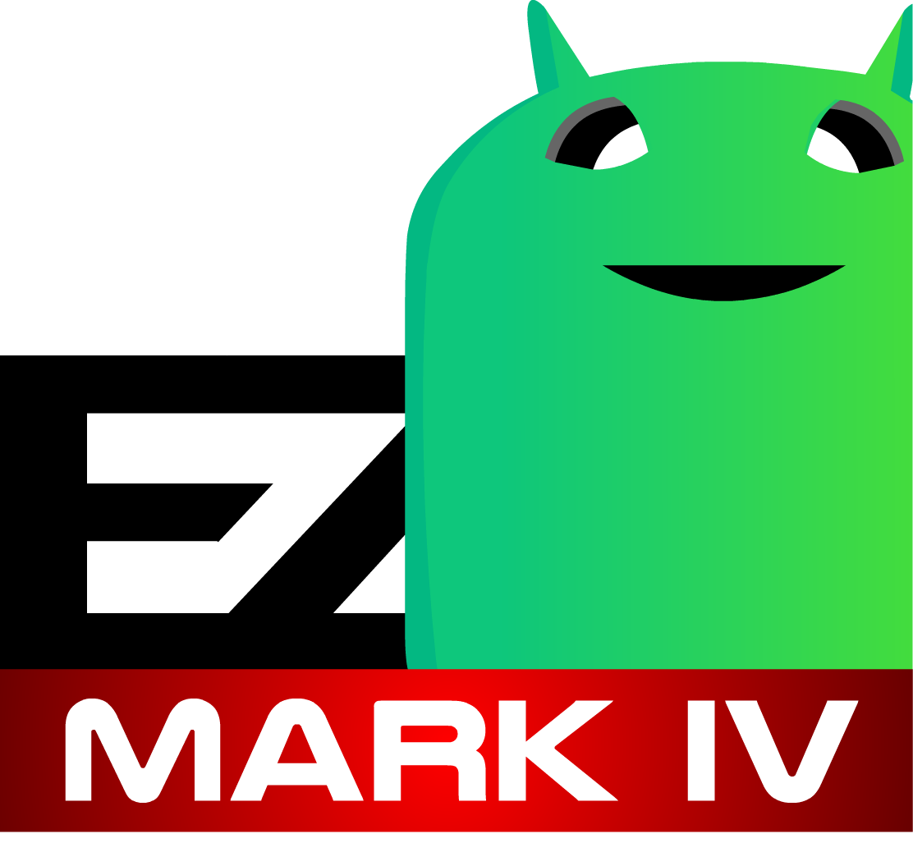

AI Detection
Uses Roboflow models to identify dishes and culture regions from selected or captured images.

MoldEZVersion 4.0 · Mark IV
AI-assisted desktop software for detecting petri dishes, measuring mold coverage, comparing sessions over time, and exporting clean analysis reports.
Free · Windows 10 & 11 · internet required for AI model init
Workflow
Uses Roboflow models to identify dishes and culture regions from selected or captured images.
Calculates plate diameter, culture area, coverage percentage, and pixel-based metrics.
Save, load, and compare analyses across time points for organized experimental tracking.
Export PDF reports with results, visual overlays, trends, and analysis metadata.
Get MoldEZ
No build steps — download, run the installer, and launch. The AI model initializes on first use and needs an internet connection.
Windows 10 and 11
In preparation
Windows.py & MacOS.py
Requirements
Packaged builds are intended for desktop use. Roboflow model initialization requires internet access.